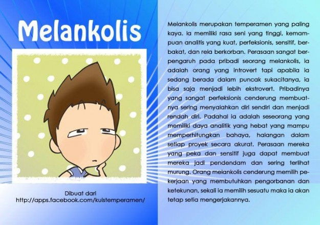
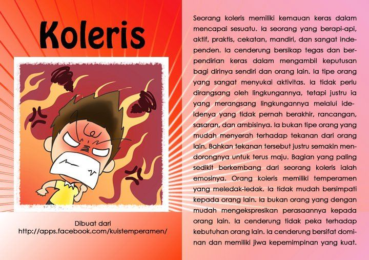
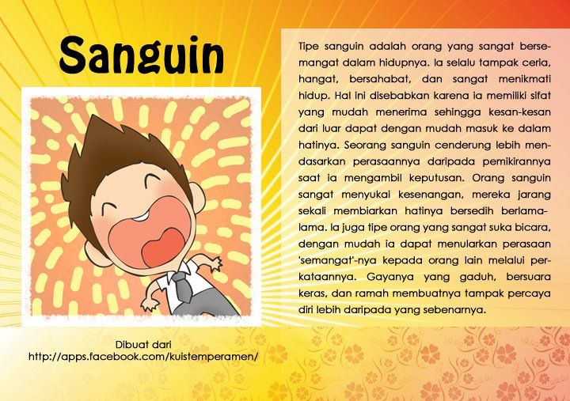
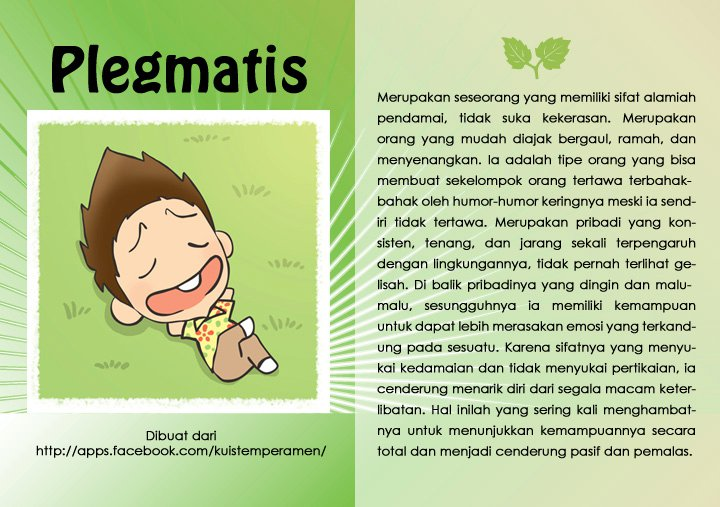

LATIHAN LAYOUT
Melankolis
Bila mendengar tipe yang satu ini, banyak yang mengaitkannya dengan sesuatu yang mudah sedih dan berbau depresi. Padahal tidak selalu seperti itu, ciri ciri dari orang dengan tipe melankolis yaitu cenderung introvert, taat aturan, suka membuat rencana detail sebelum bertindak, suka dengan detail, dan termasuk pemikir yang perfeksionis.
Koleris
Sifat sifat yang menggambarkan tipe orang koleris antara lain tidak terlalu suka dengan basa basi, percaya diri, cenderung ekstrovert, menyukai percakapan mendalam, dan lebih suka untuk berkumpul dengan mereka yang mempunyai sifat sama dengannya. Orang orang dengan kepribadian ini umumnya mempunyai keinginan besar, dan begitu fokus dengan tujuan tersebut.
Sanguinis
Apabila bertemu dengan orang dengan ciri ciri ceria, optimis, riang, lincah, dan menyukai petualangan, maka kemungkinan mereka mempunyai tipe kepribadian sanguinis. Banyak yang menyebutkan bahwa tipe satu ini merupakan karakteristik manusia yang paling umum. Dan mereka banyak mendominasi pada bidang bisnis, politik, dan juga olahraga.
Plegmatis
Tipe kepribadian manusia yang terakhir yaitu plegmatis, dimana mereka dengan tipe ini umumnya banyak terjun ke profesi yang berhubungan dengan pelayanan. Misalnya pekerja sosial, perawat, guru, atau psikolog. Hal ini tidak terlepas dari sifat mereka yang pembawaannya tenang, cenderung menghindari konflik, dan sering menjadi penengah dalam suatu masalah.